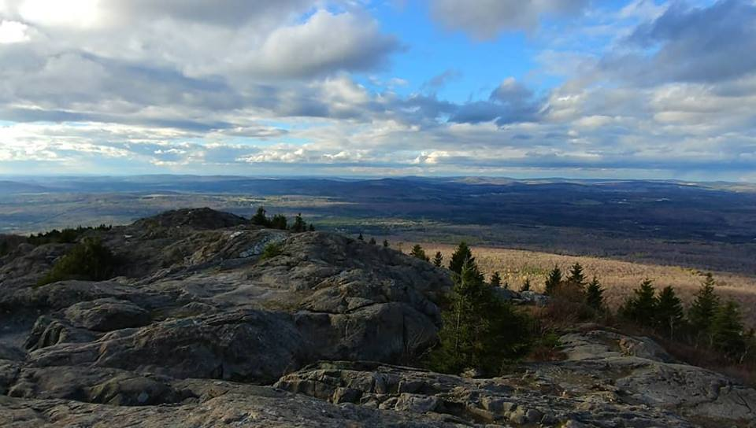
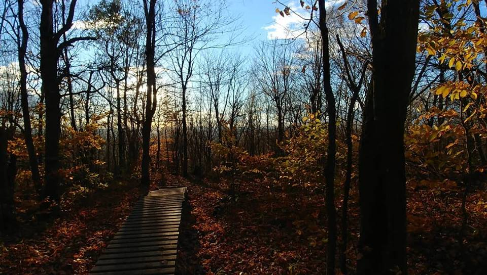

Hello, je suis Shanon !

Mes études
Mes loisirs
Mes sports
Mes rêves
Mes études
Dès la fin de mon secondaire j’ai fait une session en langue, j’ai ensuite fait un an en cinéma mais je n’étais suffisamment sérieuse et j’ai abandonné...
Après de gros changement dans ma vie, un enfant suivi d’une séparation, j’ai fait le choix de m’inscrire à la technique en Design de présentation que j’ai complété en 4 ans. Le cours en composition graphique m’a permis de découvrir la suite Adobe que j’ai tout de suite adorée.
Dès la fin de la technique, j’ai été engagée pour une entreprise œuvrant en parti dans le développement web. Bien que mon poste soit au service à la clientèle, depuis octobre dernier, j’ai hérité de quelques taches plus orientées vers le design web. De façon à me libérer du service à la clientèle pour toujours et à jamais, j’ai décidé de m'inscrire à l’AEC en Design et intégration.
- École primaire St-Louis
- Première, deuxième et troisème année
- École primaire Gareau
- Quatrième, cinquième et sixième anné
- École secondaire Des Rives
- Collège Montmorency (Langue)
- Cégep Lionel Groulx (Cinéma et communication)
- Cégep du Vieux Montréal (Design de présentation)
- Cégep de Trois-Rivières (C'est nous !)
Retour au menu
Mes loisirs
De façon général, j'essaie de passer mes temps libres avec mon garçon, Sid. Quand j'ai du temps seulement pour moi, j'aime bien jouer au jeu vidéo, lire ou regarder mes séries du moment.
Tel que mentionner sur ma page de sport, j'adore pratiquer des sports extérieurs.
- Passer du temps avec mon fils
- Jouer aux jeux vidéos
- Lire mon livre du moment
- Rattraper mes séries préférées
- Pratiquer des sports extérieurs
- Cuisiner
Retour au menu
Mes sports
En ce moment, je pratique surtout le snowboard. J'essaie d'y aller le plus souvent possible.

Peu importe la saison, j'adore faire de la randonnée en montagne.
 Dès la fonte des neiges jusqu'à son retour, je me déplace le plus possible à vélo.
| Nom du sport | Commentaires |
|---|---|
| Snowboard | Aussi souvent que possible |
| Randonnée | Peu importe la saison |
| Vélo | Pour tous mes déplacements |
Mes rêves
J'estime avoir la chance d'être à un moment dans ma vie ou le moment présent prend beaucoup de place et j'apprécie énormément cette situation. Par contre, si je me progète dans le futur, j'aimerais beaucoup voyager et découvrir le nord de l'Europe.
 Retour au menu
Retour au menu